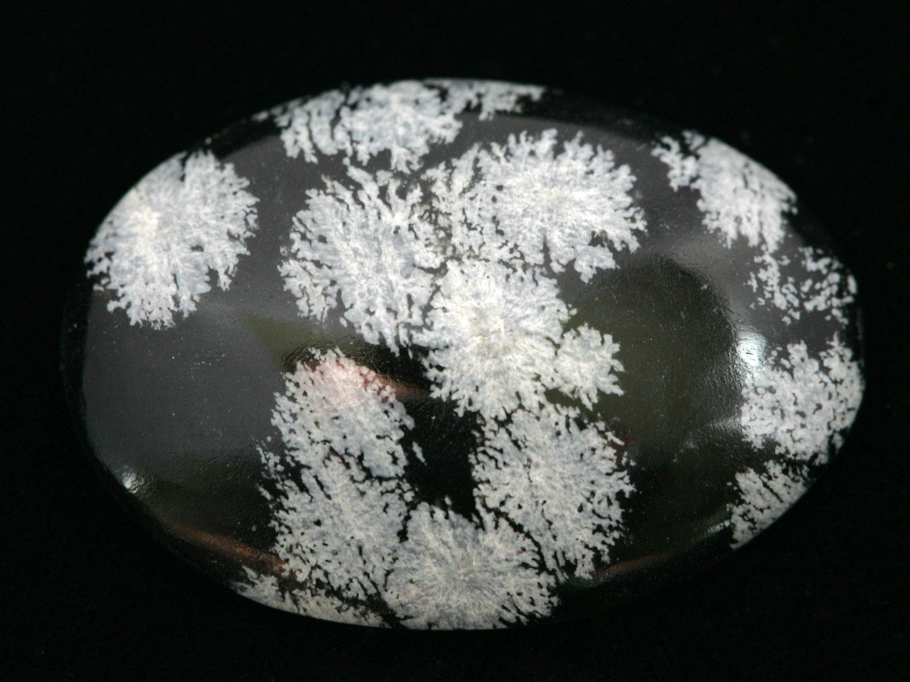

Veientana
Veientana is a black stone marked with white spots or lines. ¹ ² It is associated with Veii in Italy, though the same kind is also found elsewhere.
Generic

Black snowflake obsidian with white cristobalite spots, shown as an appearance analogue for Veientana (source).

Veientana is a black Italian stone with white markings. ¹ ² The name Veientana Italica recalls its place of origin, Veii; ² it is also found elsewhere. The accounts describe the spots as glittering and the markings as lines, both set against black stone.
Sources
1. St. Isidore of Seville — Etymologies, Book XVI, XI.5
- Veientana is an Italian gemstone, found in Veii (i.e. a city in Etruria). It is black on the surface with glittering white spots mingled in it.
2. Camillo Leonardi — Speculum Lapidum, “Veientana Italica”
Veientana Italica takes its name from its place of origin. It is also found in many other places, and from this it took its patronymic. It is a black stone with white lines and spots.